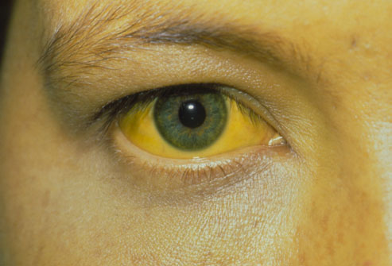
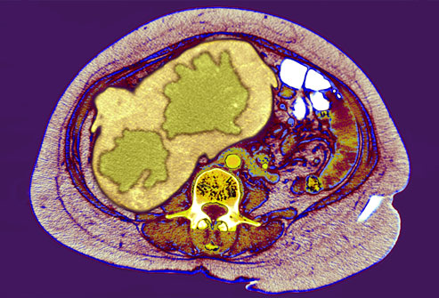

Hepatitis is an inflammation of the liver. It may be caused by drugs, alcohol use, or certain medical conditions. But in most cases, it's caused by a virus. This is known as viral hepatitis, and the most common forms are hepatitis A, B, and C.
Hepatitis Symptoms

Sometimes there are no symptoms of hepatitis in the first weeks after infection -- the acute phase. But when they happen, the symptoms of types A, B, and C may include fatigue, nausea, poor appetite, belly pain, a mild fever, or yellow skin or eyes (jaundice). When hepatitis B and C become chronic, they may cause no symptoms for years. By the time there are any warning signs, the liver may already be damaged.
Hepatitis A: What happens?
Hepatitis A is highly contagious and can spread from person to person in many different settings. It typically causes only a mild illness, and many people who are infected may never realize they're sick at all. The virus almost always goes away on its own and does not cause long-term liver damage.
Hepatitis A: How does it spread?
It usually spreads through food or water. Food can be tainted when it's touched by a person with hepatitis who did not wash his hands after using the bathroom. This transfers tiny amounts of infected stool to the food. Raw shellfish, fruits, vegetables, and undercooked foods are common culprits in hepatitis A outbreaks. The virus can also spread in daycare centers if employees aren't careful about washing hands after changing diapers.
Hepatitis A: Who is at risk?
A prime risk factor for hepatitis A is traveling to or living in a country with high infection rates. Eating raw foods or drinking tap water can raise your risk while traveling. Children who attend daycare centers also have a higher risk of getting hepatitis A.
Hepatitis B: What happens?
Many adults who get hepatitis B have mild symptoms for a short time and then get better on their own. But some people are not able to clear the virus from the body, which causes a long-term infection. Nearly 90% of infants who get the virus will carry it for life. Over time, hepatitis B can lead to serious problems, such as liver damage, liver failure, and liver cancer.
Hepatitis B: How does it spread?
You can get it through contact with the blood or body fluids of an infected person. It's also possible to get hepatitis B by sharing an infected person's needles, razors, or toothbrush. And an infected mother can pass the virus to her baby during childbirth. Hepatitis B is not spread by hugging, sharing food, or coughing.
Hepatitis B: Who is at risk?
Anyone can get hepatitis B, but people who have multiple sex partners or inject illegal drugs have a higher risk. Other risk factors include being a health care worker who is exposed to blood, or living with someone who has chronic hepatitis B.
Hepatitis C: What happens?
About 25% of people who get hepatitis C defeat the virus after a short-term infection. The rest will carry the virus in their body for the long term. Chronic hepatitis C can cause very serious complications, including liver failure and liver cancer.
Hepatitis C: How does it spread?
It spreads through infected blood. In the U.S., sharing needles or other items used to inject drugs is the most common cause of infection. Getting a tattoo or body piercing with an infected needle is another means of exposure. A mother may pass the virus to her child at birth. In rare cases.
Hepatitis C: Who is at risk?
People who have injected illegal drugs at any time, even one time, many years ago, could be walking around with chronic hepatitis C. Because there are often no symptoms, many former drug users may not realize they have the infection. People who received a blood transfusion before 1992 also have a higher risk. Before that year, donated blood was not screened for the hepatitis C virus.
How is Hepatitis diagnosed?
Chronic hepatitis can quietly attack the liver for years without causing any symptoms. Unless the infection is diagnosed, monitored, and treated, many of these people will eventually have serious liver damage. Fortunately, blood tests can determine whether you have viral hepatitis, and if so, which kind.
Who should be tested for Hepatitis?
Testing is important for anyone with the risk factors we've mentioned, particularly injected drug users and people who have had multiple sex partners. Health advocates are also urging people of Asian heritage to get tested. Stanford University's Asian Liver Center estimates that 1 in 10 Asians living in the U.S. has chronic hepatitis B. Many of them have probably had the virus since birth.
Also, the U.S. Preventive Services Task Force recommends that health care providers offer a one-time hepatitis C screening for anyone born between 1945 and 1965.
What if you test positive?
If a test says you have viral hepatitis, you can take steps to protect the ones you love. For hepatitis A, wash hands frequently. For hepatitis B and C, avoid sharing nail clippers, razors, or toothbrushes. Hepatitis B, and sometimes hepatitis C, can be passed through sexual contact. Make sure everyone in your household gets the hepatitis B vaccine. An important step is to see a specialist to discuss treatment options.
Treatment: Hepatitis A
Hepatitis A almost always goes away on its own, and no medication is needed. If nausea is a problem, try eating several small meals throughout the day instead of three large ones. Drink water, juice, or sports drinks to stay hydrated. And avoid hard exercise until you're feeling better.
Treatment: Chronic Hepatitis B
The goal of treating chronic hepatitis B is to control the virus and keep it from damaging the liver. This begins with regular monitoring for signs of liver disease. Antiviral medications may help, but not everyone can take them or needs to be on medication. Be sure to discuss the risks and benefits of antiviral therapy with your doctor.
Treatment: Chronic Hepatitis C
The latest drug to be approved by the FDA is glecaprevir and pibrentasvir (Mavyret). This medication offers a shorter treatment cycle of 8 weeks for adult patients with all types of HCV who don’t have cirrhosis and who have not been previously treated. The length of treatment is longer for those who are in a different disease stage. The prescribed dosage for this medicine is 3 tablets daily.
There are several other combination drugs available, as well as some single drugs that may be used in combination. Your doctor will choose the right one for you depending on the type of hepatitis C you have, how well your liver is functioning and any other medical problems you may have. Also be sure to discuss your insurance coverage since these medications are expensive.
Monitoring Chronic Hepatitis
To manage chronic hepatitis B or C, your doctor will order regular blood tests to check how well your liver is working. Ultrasounds and CT scans can also reveal signs of damage. If the virus is not causing any liver problems, you may not need treatment. But it's important to have regular tests to watch for changes. Complications are easiest to treat when found early.
Complications: Cirrhosis
One of the most common complications of chronic hepatitis is cirrhosis. This is a scarring of the liver that can be found with a biopsy. Cirrhosis makes it difficult for the liver to do its job and can lead to liver failure, a life-threatening condition. Symptoms include fatigue, nausea, weight loss, and swelling in the belly and legs. In severe cases, patients may experience jaundice and confusion.
Complications: Liver Cancer

Viral hepatitis is the top cause of liver cancer, so people with chronic hepatitis B or C need monitoring even if they feel healthy. Blood tests can detect proteins that suggest the presence of liver cancer. Ultrasounds, CT scans, and MRIs can reveal abnormal lesions in the liver (seen here in green). A biopsy is needed to determine if these areas are cancerous. Tumors that are found early may be surgically removed. But most liver cancers are difficult to treat.
Liver Transplant
The liver is a vital organ that aids in metabolism, digestion, detoxifying, and the production of many proteins needed by the body. If a large part of the liver is damaged beyond repair, it will no longer be able to perform these important jobs. People cannot live without a working liver. In this case, a liver transplant may be the best hope. This option provides the patient with a healthy liver from a donor.
Hepatitis A and B Vaccines
There are vaccines to protect against hepatitis A and B. The CDC (Centre for Disease Control ) recommends hepatitis A vaccination for all children ages 12 to 23 months and for adults who plan to travel or work in areas with hepatitis A outbreaks or who have other risk factors. People with chronic hepatitis B or C should also get the hepatitis A vaccine if they don't already have immunity to the disease. The hepatitis B vaccine is recommended for all infants at birth and for adults who have any of the risk factors we discussed earlier.
There is no vaccine for hepatitis C.
Protecting your Liver
If you have chronic hepatitis, there are steps you can take to keep your liver resilient. Avoid alcohol, which can cause additional liver damage. Check with your doctor before taking any medications or supplements, because some are tough on the liver or may not be safe in people with liver disease. Most importantly, keep your appointments for regular monitoring. By watching for any changes in your liver, you and your health care provider can stay one step ahead of the virus.
Video: Prevent Hepatitis
Video: 5 Home remedies will cure you from Hepatitis
{kind=link}
{kind=link}
{kind=link}
{kind=link}
{kind=link}
{kind=link}